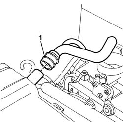

1080D22 oil vapour pipe from cam cover to intake r r
- Path
- Procedures > 10 ENGINE UNIT > 1080 EXHAUST EMISSION CONTROL SYSTEM > 1080D crankcase vapour/gas recirculation system > 1080D22 oil vapour pipe from cam cover to intake r r
- Kind
- repair procedure (removal / refitting; the operation number is the code)
- Applies to
- engines: 1.1, 1.2 8v; all production periods
- Interactive page
- https://sloeber94.github.io/elrnDB-fPnd/en/#/2752521
Applies to: engines: 1.1; all production periods
 Removing
Removing
 Refitting
Refitting1048A10 air cleaner filtering element - replace
1. Releaase the pipe from the tapper cover and remove it.

Applies to: engines: 1.2 8v; all production periods
Removing
Refitting1048A10 air cleaner filtering element - replace
1. Release the pipe from the tappet cover and remove it.
Applies to: engines: 1.1; all production periods
Refitting
RemovingFit the pipe in place on the tappet cover.
Applies to: engines: 1.2 8v; all production periods
Refitting
RemovingFit the pipe in place on the tappet cover.